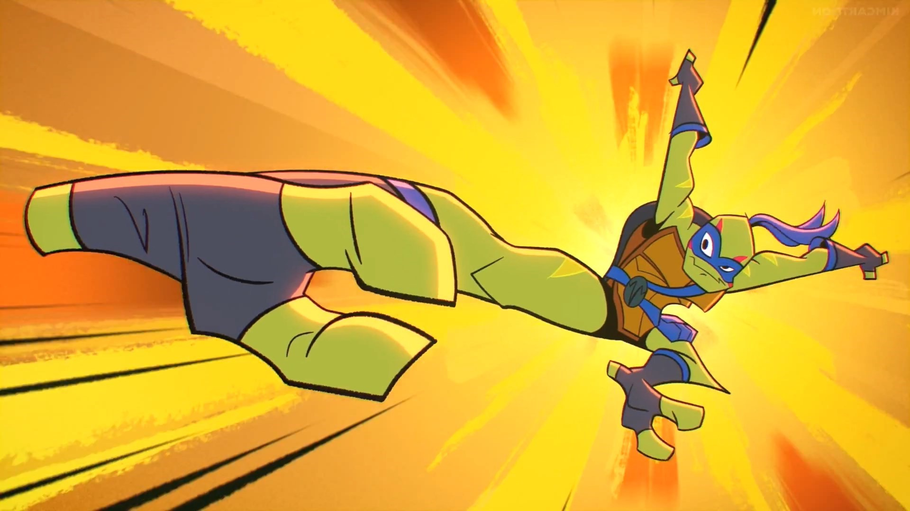
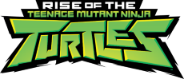
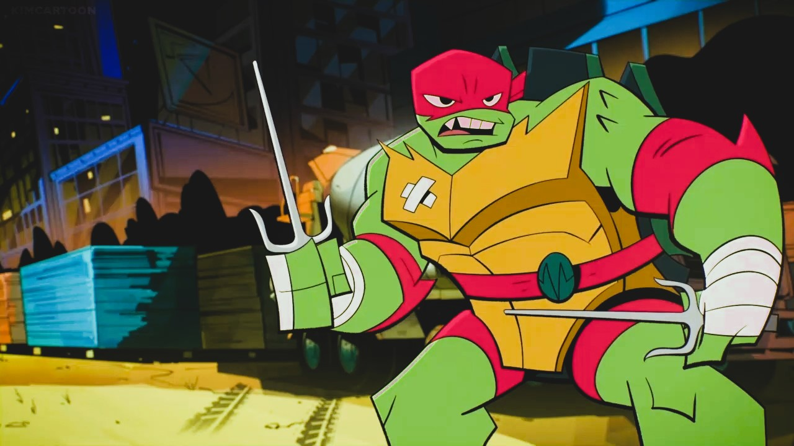
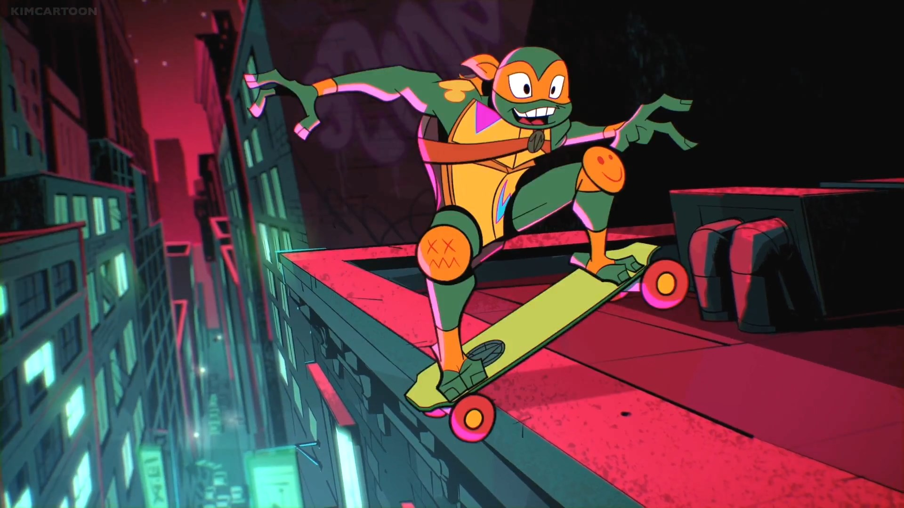

Leonardo
Leo é inteligente e bem vestido, uma tartaruga de orelhas vermelhas que usa suas habilidades afiadas contra os melhores oponentes. Pegando atalhos em volta dos obstáculos e usando a sua espada ōdachi com poderes místicos de criar portais

Rafael
Rafa é uma tartaruga aligátor com um temperamento "explosivo". Ele empunha um par de tonfā geradoras de energia mística e acredita que pode resolver qualquer situação com os punhos!!

Michelangelo
A mais nova tartaruga do grupo, Mikey é uma tartaruga de caixa com muita energia. Sua arma é uma kusari-fundō com poderes místicos de esticar.

Donatello
Donnie é uma tartaruga de casco mole que adora o drama e a extravagância. Com seu bō de alta tecnologia ele pode lidar com qualquer ameaça.